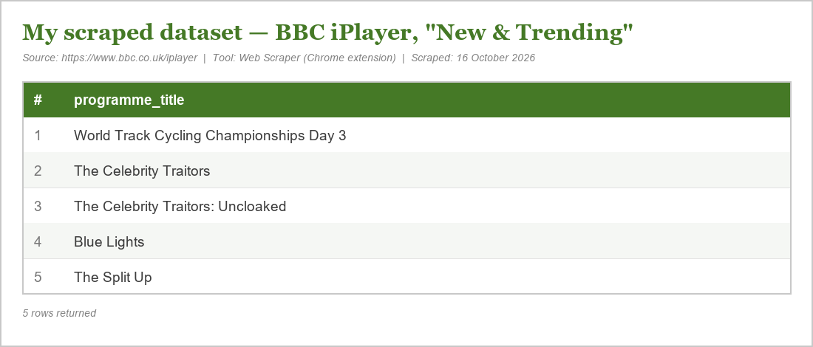

Hi, I'm Zhiqi Yao, a postgraduate student on the MA Digital Media programme at the University of Leeds.
This is my online portfolio, where I collect the work I create during my studies — websites, digital projects, and reflections on what I learn about digital media.
I love playing football and I spend a lot of time on social media like Douyin. This everyday experience made me curious about one question: how do algorithms decide what I see? This curiosity is what brought me to Digital Media.
This week, in my first workshop, I built my own web page using HTML and CSS, and published it online with GitHub Pages. Before this, I had only ever used websites — I had never thought about how they are made.
Two things surprised me. First, a web page is really two files working together: HTML gives the page its structure, and CSS gives it its style. Changing one line of CSS can completely change how the page looks. Second, publishing is not the same as saving. My page was not visible to others until I set up GitHub Pages correctly.
I also made a mistake that taught me something useful. When my website first showed a 404 error, I spent a long time thinking my account had been blocked. In fact, the problem was much simpler — I had typed the wrong address. This reminded me that, in digital work, checking the small details carefully is as important as understanding the big ideas.
This task connected to our reading on algorithms. Building a page myself made me realise that the internet is not a neutral space — it is made of choices, and now I am starting to understand how those choices are made.
This week I used the Web Scraper browser extension to build my first dataset, by scraping the BBC iPlayer homepage. I created a sitemap, defined a selector targeting the "New & Trending" section, and extracted the titles of five programmes.
The process taught me two things. First, a website is not a "given" object but an assembly of code. Scraping works by reading that code, and my selector had to target the exact HTML container in order to return clean data — a small mistake in the selector and I collected a cookie banner instead of programmes.
Second, and more importantly, I experienced the limitation the workshop kept returning to: scraping can only harvest what the code defines. I could collect the title of a programme, but the tool told me nothing about why the BBC chose to promote it, or how audiences experience it. The data arrived without context, and the meaning still has to come from human interpretation.
A technical struggle was also instructive. My scraper's export options would only flatten all the titles into one cell, or spread them across separate columns, rather than listing them one per row. Getting clean, analysable data meant knowing how to work around the tool's limits — which is itself a research skill, and a reminder that "raw data" is never quite raw.
